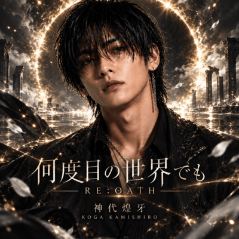

OCTOBER LIMITED · MUSIC & NIGHT
SUZUKA MUSIC UNIVERSE
最新曲をテーマに選んだSUZUKA作品。 SUZUKAの架空のAIアーティスト作品を紹介します。
最新曲をテーマに選んだSUZUKA作品。
妃みちる
RE:VIVE
神代煌牙
LEON VAIL
榎本魅愛
鉄髭 - TETSUHIGE -

OFFICIAL YOUTUBE
SUZUKAの新しいMVと音楽をYouTubeでチェック。